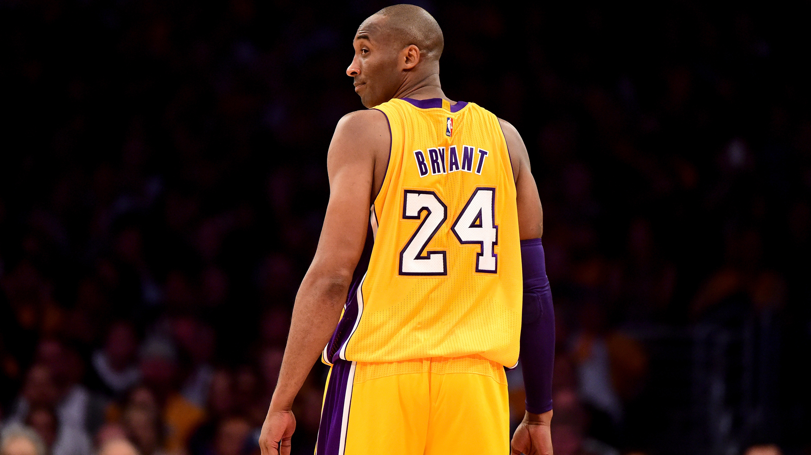
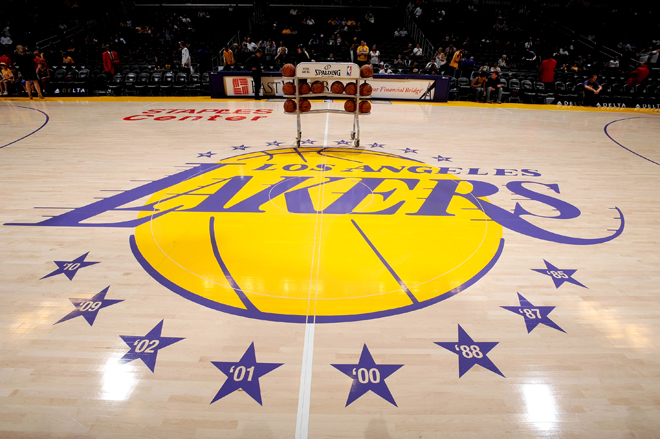

 Kobe Bryant is my basketball idol since I started to love basketball. He was one of the greatest basketball player ever to step on the court He won 5 championships and got several awards in his 20 years of playing.
 Los Angeles Lakers was Kobe Bryant's team, and of course this team is my favorite. They are experiencing struggles right now, but I'm still with them. Because since I was a child, they are my team. And until I die, I will be Lakers for life.
This album is my favorite because it gives me the relaxation that I want. The songs in it are smooth and cool for me. John Mayer is the artist of it. His great skills in guitar made me a fan of him. I especially like one particular song, entitled "Gravity".
Bruno Mars is my favorite singer, because of his high voice that I can't reach and the way he sing. His energetic performance makes me want to sing and make the girls admire him. My favorite song of him is "Just the Way You Are".
This is my favorite TV series, the House M.D. This is about doctors obviously helping patients,but they help according to their personal belief.This is interesting even though I don't really understand the medical terms, but I understand their struggles in life.
Cong Velasquez a.k.a Cong TV is a youtube vlogger from the Philippines who vlogs his life and give happiness to his viewers because of his humor. He's the only vlogger that I'm watching, because I can relate to his jokes.
Top
Next
Back
Copyright© 2017 Wilfred Magsakay. All Rights Reserved.